Land managers, fire scientists and reporters judge a season by comparing it with past ones. NASA's satellite fire record makes that hard: it was built by different cameras in turn, and each counts fires differently.
MODIS, the older camera, flew first. VIIRS, a sharper camera, took over in 2012 and sees far more small fires. So the record jumps when the camera changes, not when the land does.
It just happened again: Suomi NPP, which carried the record since 2012, stopped sending fire data on Nov 2, 2026.
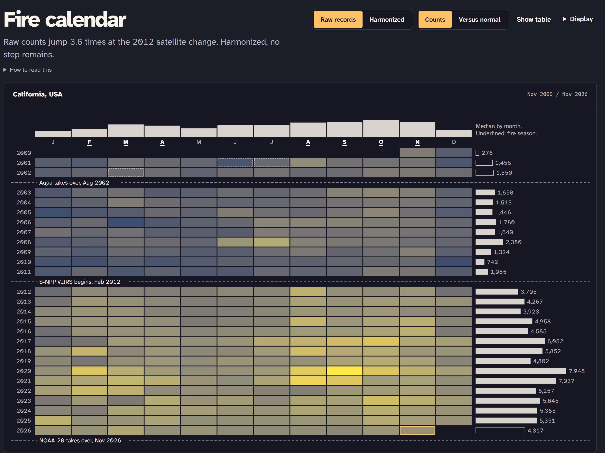
Overpass works like a currency converter. It learns the exchange rate from 2012 to 2020, when old and new cameras flew side by side, then converts every older month into today's unit.
Converted months are hatched and carry a 90% range: where we expect the true value 9 times in 10.
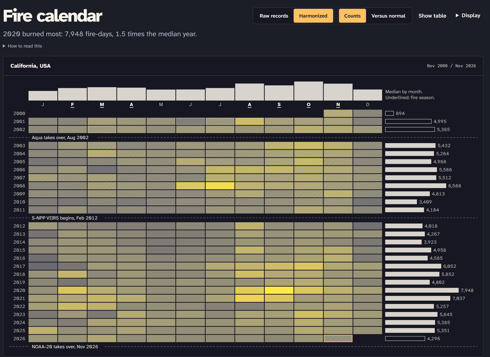
It compares days 1 to of this month with days 1 to of every past one, so a half-finished month is never unfairly "below normal". The live numbers come from NOAA-20, the satellite that replaced Suomi NPP, converted into the same unit.
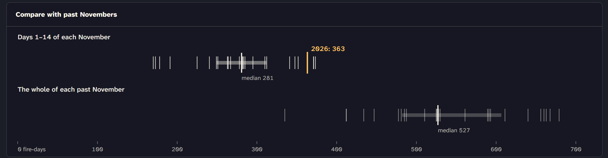
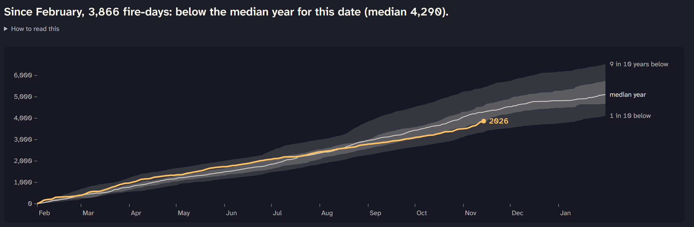
Each bar is one fire year: from the day 10% of its fires had burned to the day 90% had. The dot is the midpoint.
Overpass fits a trend to each date and only calls it a trend when the numbers support it. It also re-checks every trend on one camera alone, so a camera change can't pass as a climate signal.
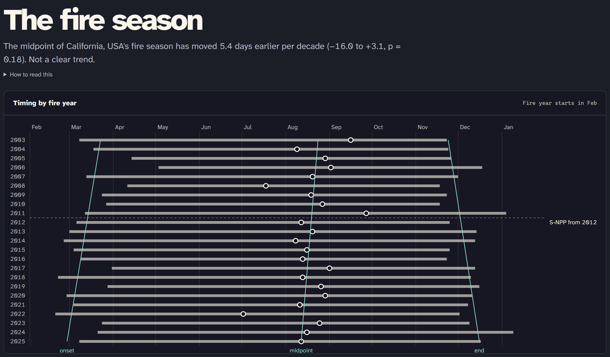
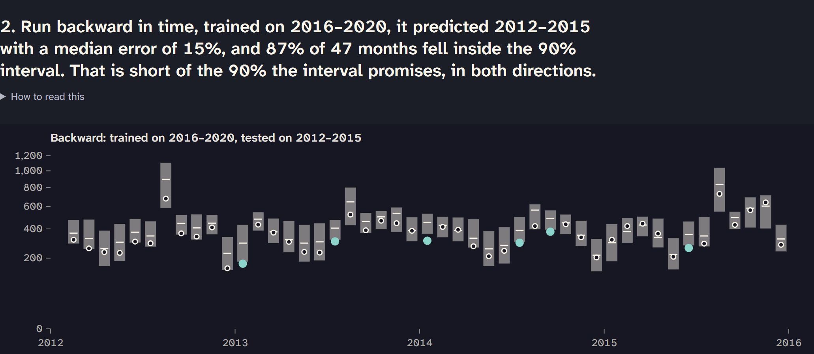
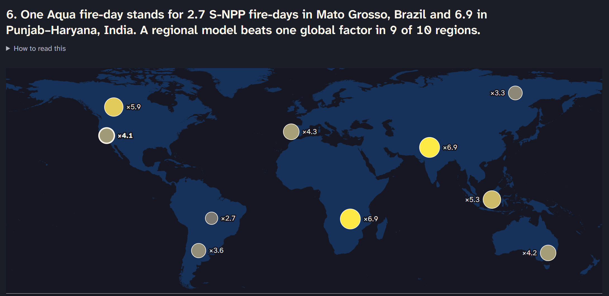
Cliff Melt makes every month a hill: across is the month, depth is the year, height is fire-days. Raw, the land hits a wall at 2012. Harmonized, the ridges run unbroken.
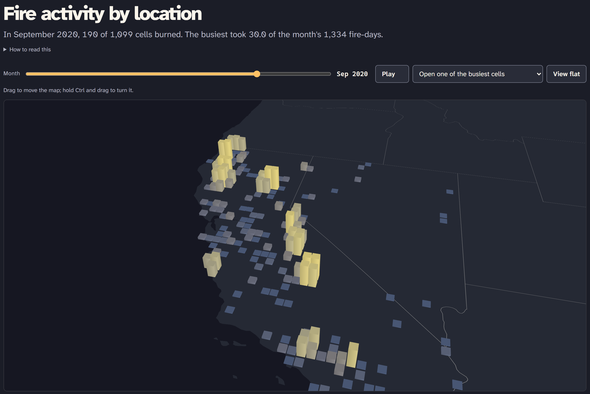
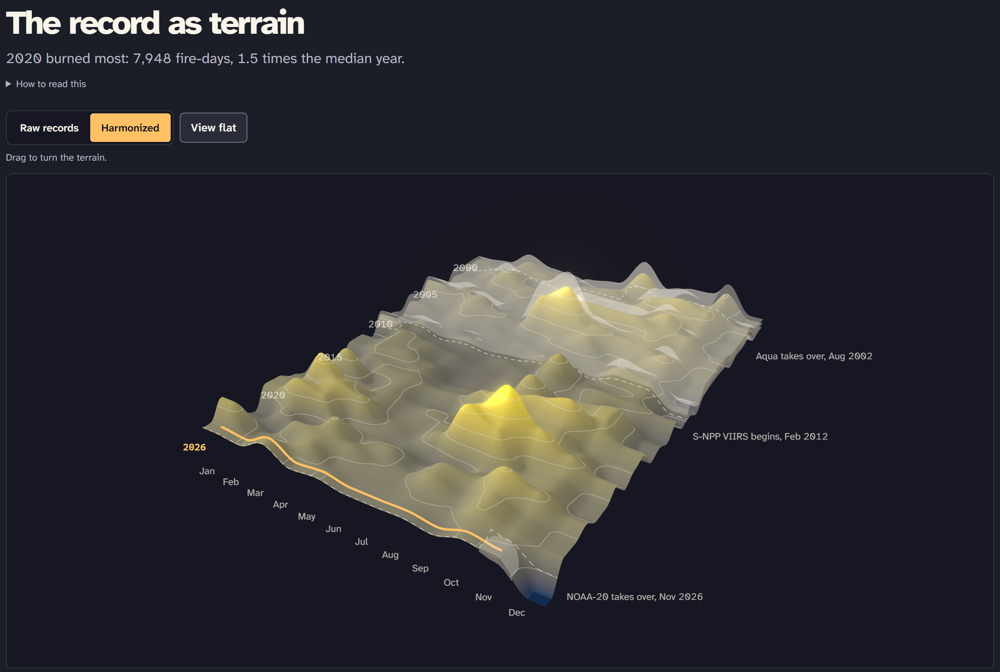
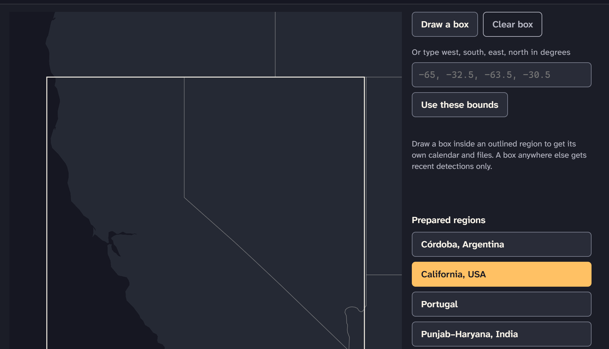
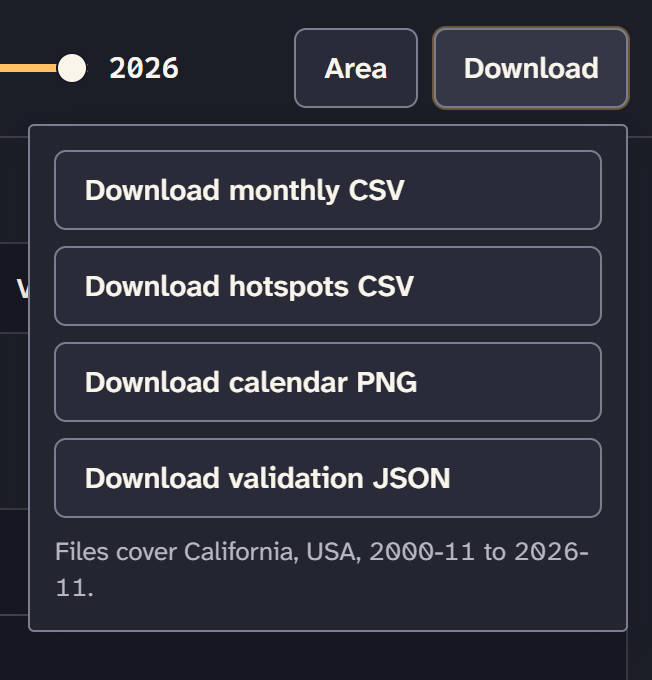
Draw a box inside a prepared region for its own calendar. Anywhere else on Earth, the box shows recent detections.
Download the monthly series with its ranges, every raw hotspot as CSV, the calendar image, and the test results.